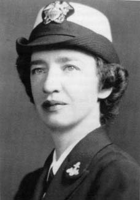
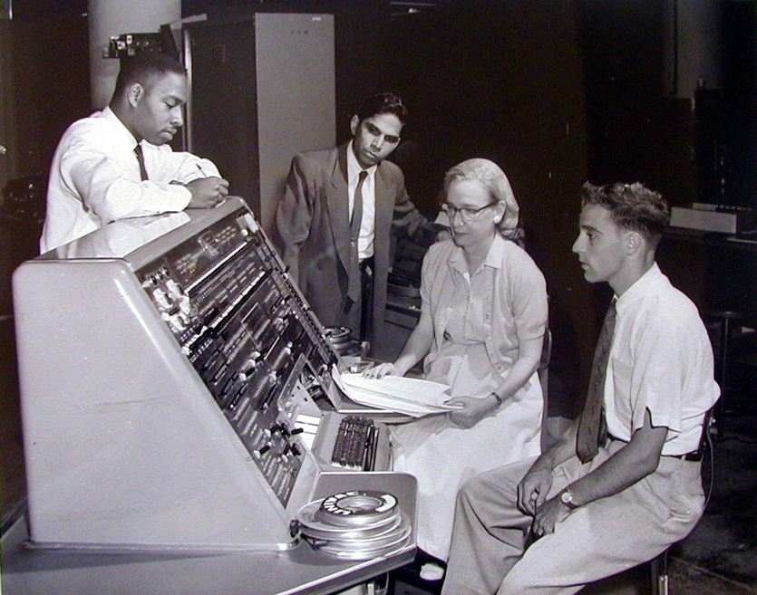
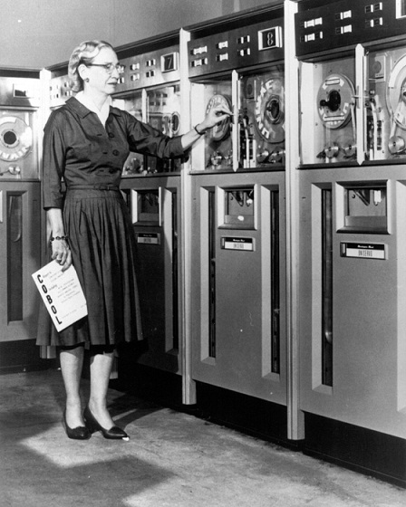

Careers
-
World War II
Hopper had tried to enlist in the Navy early in the war. She was at age 34, too old to enlist, and her weight to height ratio was too low. She was also denied on the basis that her job as a mathematician—she was a mathematics professor at Vassar College—was valuable to the war effort. During World War II in 1943, Hopper obtained a leave of absence from Vassar and was sworn into the United States Navy Reserve, one of many women to volunteer to serve in the WAVES. She had to get an exemption to enlist; she was 15 pounds (6.8 kg) below the Navy minimum weight of 120 pounds (54 kg). She reported in December and trained at the Naval Reserve Midshipmen's School at Smith College in Northampton, Massachusetts. Hopper graduated first in her class in 1944, and was assigned to the Bureau of Ships Computation Project at Harvard University as a lieutenant, junior grade. She served on the Mark I computer programming staff headed by Howard H. Aiken. Hopper and Aiken coauthored three papers on the Mark I, also known as the Automatic Sequence Controlled Calculator. Hopper's request to transfer to the regular Navy at the end of the war was declined due to her advanced age of 38. She continued to serve in the Navy Reserve. Hopper remained at the Harvard Computation Lab until 1949, turning down a full professorship at Vassar in favor of working as a research fellow under a Navy contract at Harvard.
- 
UNIVAC
In 1949, Hopper became an employee of the Eckert–Mauchly Computer Corporation as a senior mathematician and joined the team developing the UNIVAC I. When she recommended that a new programming language be developed using entirely English words, she "was told very quickly that [she] couldn't do this because computers didn't understand English." This idea was not accepted for 3 years, and she published her first paper on the subject, compilers, in 1952. In the early 1950s, the company was taken over by the Remington Rand corporation, and it was while she was working for them that her original compiler work was done. The compiler was known as the A compiler and its first version was A-0.
In 1952 she had an operational compiler. "Nobody believed that," she said. "I had a running compiler and nobody would touch it. They told me computers could only do arithmetic."
In 1954 Hopper was named the company's first director of automatic programming, and her department released some of the first compiler-based programming languages, including MATH-MATIC and FLOW-MATIC.
- 
-
COBOL
In the spring of 1959, computer experts from industry and government were brought together in a two-day conference known as the Conference on Data Systems Languages (CODASYL). Hopper served as a technical consultant to the committee, and many of her former employees served on the short-term committee that defined the new language COBOL (an acronym for COmmon Business-Oriented Language). The new language extended Hopper's FLOW-MATIC language with some ideas from the IBM equivalent, COMTRAN. Hopper's belief that programs should be written in a language that was close to English (rather than in machine code or in languages close to machine code, such as assembly languages) was captured in the new business language, and COBOL went on to be the most ubiquitous business language to date.
From 1967 to 1977, Hopper served as the director of the Navy Programming Languages Group in the Navy's Office of Information Systems Planning and was promoted to the rank of Captain in 1973. She developed validation software for COBOL and its compiler as part of a COBOL standardization program for the entire Navy.
- 
Standards
In the 1970s, Hopper advocated for the Defense Department to replace large, centralized systems with networks of small, distributed computers. Any user on any computer node could access common databases located on the network. She developed the implementation of standards for testing computer systems and components, most significantly for early programming languages such as FORTRAN and COBOL. The Navy tests for conformance to these standards led to significant convergence among the programming language dialects of the major computer vendors. In the 1980s, these tests (and their official administration) were assumed by the National Bureau of Standards (NBS), known today as the National Institute of Standards and Technology (NIST).Back to home